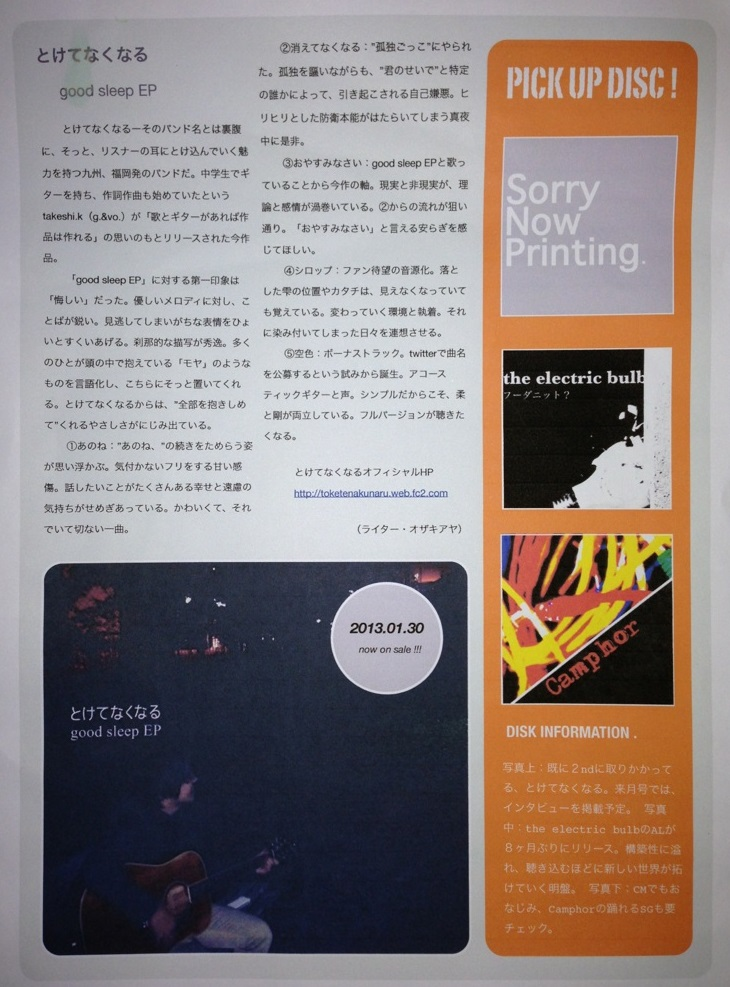
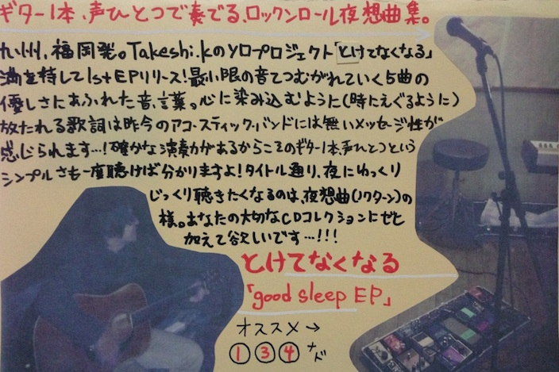

Discography
5th(studio)album-曖昧なまま
2017/xx/xx comming soon...
初のバンドアルバム。3年ぶりのリリース。

- Introduction
- 曖昧に揺れる15cm
- 消えてなくなる
- 大人のフリ
- おかえりなさい
- シロップ
- Bonus Track
all songs written by takeshi.k, aranged by とけてなくなる
Recording by
- 近藤健司：Vocal,Guitar,Bass(except M-6),Chorus,Lyric,Music,Mix
- 杉竜太：Bass(M-6)
- 安倍雅史：Drums
発売前先行配信：大人のフリ(2016/12/03~)
4th(acoustic)album-もう大丈夫
2014/03/26 download free!
- 数％の思考
- 君はどう？(with the piano by 一瀬)
- すり減らして
- もう大丈夫
all songs written by takeshi.k
download: bandcamp sound cloud
全曲試聴クロスフェード
君はどう？(with the piano by 一瀬)
3rd(session)album-君のピアノ
2013/10/02 download free
全曲試聴クロスフェード
2nd demo-not too late EP
2013/07/03 download free
全曲試聴クロスフェード
1st demo-good sleep EP
2013/01/30 download free
全曲試聴クロスフェード
ディスクレビュー（ライター：オザキアヤ）
{kind=link}
とけてなくなる-そのバンド名とは裏腹に、そっと、リスターの耳にとけ込んでいく魅力を持つ九州、福岡発のバンドだ。中学生でギターを持ち、作詞作曲も始めていたというtakeshi.k(g.&vo.)が「歌とギターがあれば作品は作れる」の思いのもとリリースされた今作品。 「good sleep EP」に対する第一印象は「悔しい」だった。優しいメロディに対し、ことばが鋭い。見逃してしまいがちな表情をひょいとすくいあげる。刹那的な描写が秀逸。多くのひとが頭の中で抱えている「モヤ」のようなものを言語化し、こちらにそっと置いてくれる。とけてなくなるからは、"全部抱きしめて"くれるやさしさがにじみ出ている。 ①あのね："あのね、"の続きをためらう姿が思い浮かぶ。気づかないフリをする甘い感傷。話したいことがたくさんある幸せと遠慮の気持ちがせめぎあっている。かわいくて、それでいて切ない一曲。 ②消えてなくなる："孤独ごっこ"にやられた。孤独を謳いながらも、"君のせいで"と特定の誰かによって、引き起こされる自己嫌悪。ヒリヒリとした防衛本能がはたらいてしまう真夜中に是非。 ③おやすみなさい：good sleep EPと歌っていることから今作の軸。現実と非現実が、理論と感情が渦巻いている。②からの流れが狙い通り。「おやすみなさい」と言える安らぎを感じてほしい。 ④シロップ：ファン待望の音源化。落とした雫の位置やカタチは、見えなくなっていても覚えている。変わっていく環境と執着。それに染み付いてしまった日々を連想させる。 ⑤空色：ボーナストラック。twitterで曲名を公募するという試みから誕生。アコースティックギターと声。シンプルだからこそ、柔と剛が両立している。フルバージョンが聴きたくなる。
つじさん作レコ屋風POP!
{kind=link}
ギター１本、声ひとつで奏でる、ロックンロール夜想曲集。
九州、福岡発。Takeshi.kのソロプロジェクト「とけてなくなる」
満を持して1st EPリリース！最小限の音でつむがれていく５曲の優しさにあふれた音、
言葉の心に沁み込むように（時にえぐるように）放たれる歌詞は昨今のアコースティックバンドにはないメッセージ性が感じられます…！
確かな演奏力があるからこそのギター１本、声ひとつというシンプルさも１度聴けば分かりますよ！タイトル通り、夜にゆっくりじっくり聴きたくなるのは、夜想曲（ノクターン
の様。あなたの大切なCDコレクションにゼヒ加えて欲しいです…！